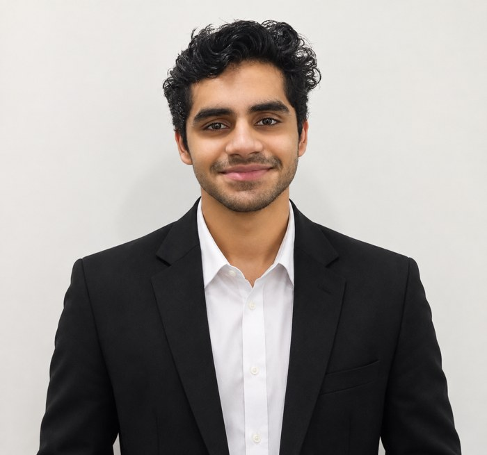

I don't just create things. I build ideas into reality.
I'm Rishabh Verma — an aspiring entrepreneur, freelancer, business student, digital builder and content creator, passionate about business, AI and content.
I enjoy exploring ideas, creating digital experiences and turning ambitious concepts into something real.
Based in India. Open to collaborations and opportunities.
About me
I believe creativity, AI and execution can come together to create something meaningful.
My interests lie at the intersection of business and AI. I enjoy understanding how things work, spotting opportunities and building solutions that bring ideas to life.
From developing digital platforms and exploring business ventures to offering freelance services and creating content, I'm always looking for ways to learn, experiment and improve.
I believe in learning by doing, thinking beyond conventional boundaries and turning curiosity into action.
What I do
-
Design and Branding
Creating visual identities, brand systems and digital designs that communicate ideas with clarity and personality.
-
Web Development
Turning concepts into functional, responsive and visually engaging websites, with a focus on usability and design.
-
Content and Storytelling
Using storytelling and digital media to share ideas and experiences and to build communities.
-
Business and Entrepreneurship
Exploring business opportunities, developing concepts and turning ideas into structured projects and ventures.
-
Freelancing
Offering creative and digital services that combine my skills in design, branding and web development.
Toolkit
Design
- Canva
Web development
- HTML
- CSS
AI and productivity
- AI-powered tools
- AI-assisted development
- Research and analysis tools
Professional skills
- Communication
- Networking
- Business development
- Research and strategy
Beyond work
I'm more than the things I build. Outside of work I enjoy:
-
Learning
Exploring new disciplines, picking up skills and seeing things from new angles.
-
Fitness
Building discipline, consistency and a stronger mindset through training.
-
Gaming
Immersive worlds, good stories and the challenge of strategy and competition.
-
Series and movies
Different stories and perspectives, and an appreciation for creative storytelling, cinematography and memorable characters.
My philosophy
Stay curious. Think differently. Build relentlessly.
I believe potential means very little without action.
Ideas are everywhere. What makes the difference is the willingness to experiment, learn from failure and execute.
I'm not trying to have everything figured out. I'm focused on learning, building and getting better with every experience.
— Rishabh Verma
Education
IIM Bangalore
BBA in Digital Business and Entrepreneurship. Currently pursuing.
Arwachin Bharti Bhawan Senior Secondary School
Completed schooling.